금융
162조3,000억 원 미래대응기금, 상임위마다 여야 맞서…산중위 예산안 의결 또 미뤄
야 "중복 편성·2년 뒤 소멸 대책 따져야" / 여 "세수 호황기 민생 재원을 쌈짓돈으로 몰아"
전주시 2030년까지 시설 투자에 시비 1조7,604억 원 필요…시의회서 '시민참여 공공투자 펀드' 제안
김인철 의원 "공공 유휴부지 발전시설 등 수입 안정적인 사업부터"…서울은 태양광 82억5,000만 원·연료전지 114억 원 시민 투자 모아

병원 '실손보험 된다' 허위·과장 광고 금지 추진…환자 알선 의료인 자격정지 2개월→6개월
의료법 시행령·시행규칙 개정안 규제합리화위원회 본심사 앞둬…보험업계 "과잉진료 줄 것" 기대, 병원협회 "기준 불명확, 과도한 규제" 반발

강원 접경 4개 군 "군 유휴부지·햇빛·물로 에너지 연대"…영농형 태양광 군민펀드·발전 수익 기본소득 제안
철원·화천·양구·인제 정책포럼…"철원 농지 60%가 외지인 소유, 발전 수익 밖으로 샌다", 철원 태양광·화천 양수발전 잇는 '접경지역 에너지 협력권' 구상

남호주 아파트 주민도 '공동 태양광·배터리'…연방·주정부 1,780만 호주달러 지원, 설치비 절반 보조에 나머지 무이자 융자
'StrataCharge' 사업, 공동주택 한 곳당 보조금·융자 각 최대 4만7,500호주달러…집주인·세입자 모두 전기요금 절감, 남호주 12명 중 1명이 공동주택 거주


해외 화석연료에 37조 원 대 준 한국, 국제 기후재원은 7조7,600억 원…녹색연합 "납부 실적 세계 최하위권"
2018~2022년 화석연료 금융이 기후재원의 4.8배…손실과 피해 기금 30.7%·녹색기후기금 23.3%만 납부
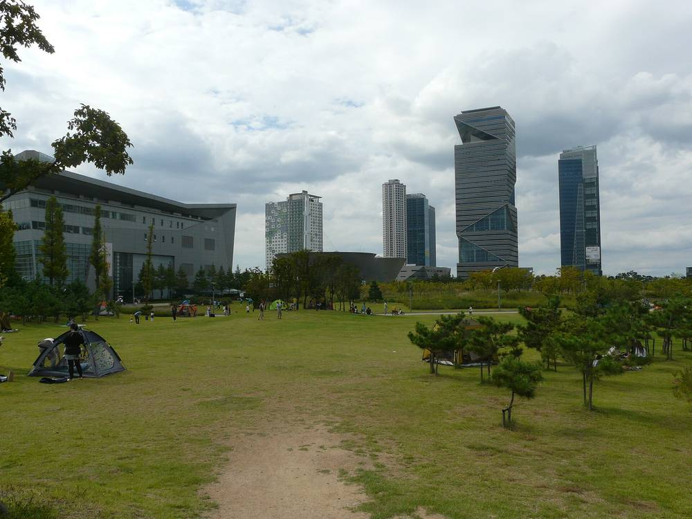
울산 375MW 부유식 해상풍력 '이스트블루파워', 동서발전·오션윈즈·금양그린파워 기술·금융 협력 점검
12일 기술교류회·경영진 간담회…포르투갈·프랑스 운영 경험 공유, 국내 기업 참여·유지보수 인력 양성도 논의

국회 정무위, 17일 금융법안 심사 재개…해킹 과징금·워크아웃법 연장 연내 처리 주목
여야, 소위 안건 협의 중…예금자보호법 특별계정 1년 연장·청년 보금자리론 위한 주금공법도 대기

제주 이창흠 초대 기후경제부지사 "풍력·햇빛 이익을 도민 소득으로"…주민참여형 사업을 도민펀드로 넓힌다
2035년 탄소중립 목표, 약 2GW 추자해상풍력 최우선…신규 발전사업 주민 채권·펀드 투자, 공유화기금은 취약계층·공동체 재원

예산소위 앞두고 여야 '미래대응기금' 공방…국힘 "정부 쌈짓돈, 전면 백지화" 민주 "삭감 외치며 지역구 사업은 증액 요구"
초과세수를 별도 기금으로 운용하는 정부안 놓고 국회 예산통제 권한 논쟁

울산 750MW 부유식 해상풍력 '문무바람' 모회사, 25일 청산 여부 주총…자금 확보가 관건
스웨덴 헥시콘, 이사회는 존속 제안했지만 '운영자금 조달 중대한 불확실성' 명시…감사인은 의견 내지 않아

독일 바이에른 이젠 시민풍력조합, 조합원 470명·출자금 80만 유로 모아…"착공은 몇 년 뒤, 지금은 준비 단계"
'시민에너지 이젠탈' 경험 나눔 행사…풍력 7기 주민 소유 푹스탈 전 군수 "돈이 마을에 남는다"

162조 미래대응기금 8개 사업 4조3,472억 원, 정부는 '신규'·국회 보고서는 '계속'…예산 심사 쟁점으로
청년일자리도약장려금 9,012억 원 중 70.1%는 옛 채용자 잔여분…기획예산처 "확대 개편으로 기금 차원 신규"

산자위, 반도체·미래대응기금 이견에 내년 예산안 의결 못 하고 정회
국민의힘 "서남권 반도체 1조5,000억 원 전액 삭감" vs 민주당 "4조5,000억 원 늘려 6조 원"

수원햇빛발전㈜ 밑그림 나왔다…공영주차장 13곳 5MW부터 20MW·328억 원, 공공 배당은 기후대응기금으로
수원시·수원도시공사·에너지협동조합 참여, 시민펀드로 이익 나눠…16일 수원시의회서 창립설명회

캐나다 캘거리 전기·가스 판매사, 이익 100%를 지역 성소수자 단체에…"요금이 공동체 기금이 된다"
사회적기업 Q-TILITIES, 대표는 월급 안 받고 5년 안에 10만 달러 이상 환원 목표

독일 조합원 4만2,000명 에너지협동조합 프로콘에 통신사도 출자…지분 1,266좌·6만3,300유로, "배당도 다시 출자"
아미바 운영사 STROTH Telecom 조합원 가입…"지분 수와 관계없이 1인 1표 민주적 구조에 끌렸다"

강원도 108억 원 현물출자한 대관령 풍력단지, 연 순이익 3억 원 그쳐…도의회 행감서 "경제성·주민 피해 다시 따져야"
강원개발공사 운영 단지 예상 매출 21억 원…유지보수·인건비 오르면 수익 더 줄 수도, 소음·저주파·그림자 깜박임 등 사회적 비용도 거론

눈의 고장 일본 나가오카에서 시민 65명이 '시민공동발전소'…출자금으로 지붕·농지 위 태양광, 수익은 출자자에게
2023년 설립한 일반사단법인 '나가오카 자연에너지', 학교 출장수업·소수력 체험도…"연간 일사량 간토의 약 80%"
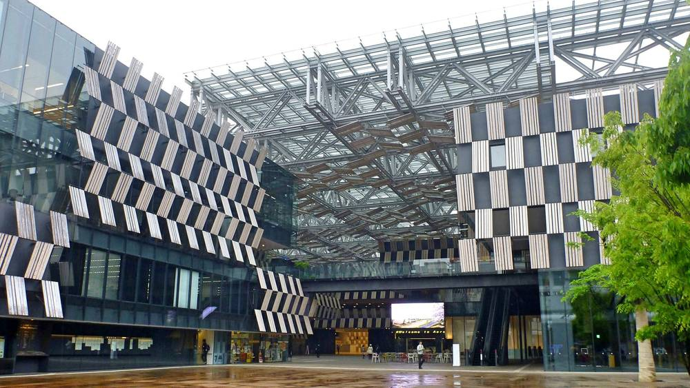
스코틀랜드 송전망 회사 500만 파운드 '넷제로 기금', 주민 주도 사업 26곳 지원 마쳐…"1파운드 넣어 사회적 가치 2.85파운드"
SP에너지네트웍스 기금, 중부·남부 공동체 건물 단열·저탄소 난방·친환경 교통 지원…워크숍 32회 450여 명, 22곳 전문 자문, 이산화탄소 2만5,000톤 넘게 줄여
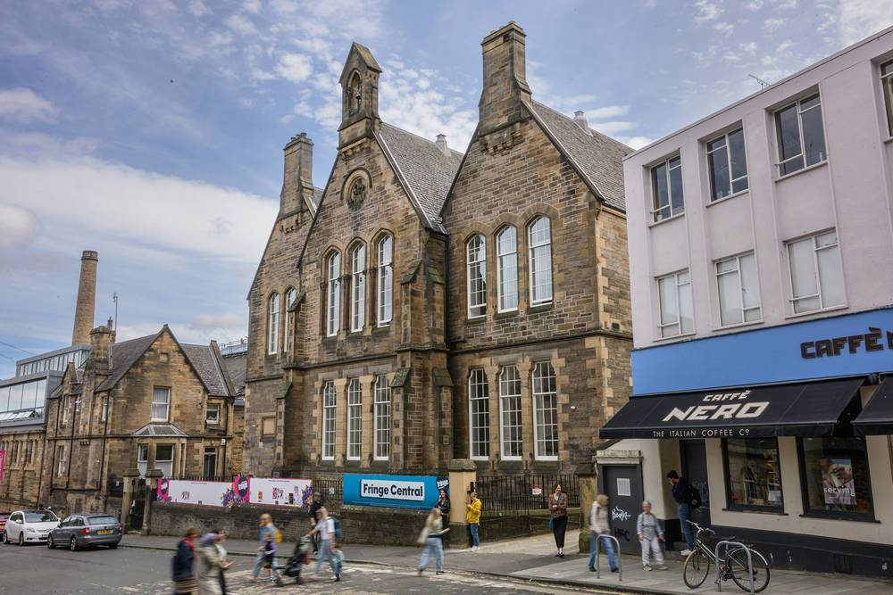
공공이 앞장선 제주·나주의 에너지 전환…풍력 공유화기금·나주형 햇빛연금으로 이익 나눴지만 전력망 포화가 숙제
제주에너지공사 풍력 59.53MW 운영·한림해상풍력 주민 1,009명 1인당 연 351만 원…나주 허가받고 못 짓는 태양광 약 2,700곳

스코틀랜드 SSEN 트랜스미션, 송전설비 인근 주민에게 162만 파운드 지역기금 설계 의견 묻는다
레어그·로가트 주민 대상 설문 11월 16일~12월 14일, 설명회 3회…'사우스 로크신 지역기금'은 2027년 문 열 예정

영국 내셔널그리드, 블라이스 변전소 증설 지역에 최대 106만 파운드 공동체 기금…쓰임새는 주민 의견 받아 정한다
데이터센터·버윅뱅크 해상풍력 연결용 변전소 1·2단계에 53만 파운드씩, 12월 6일까지 4주간 의견 수렴…기금은 내년 여름 출범

용인시정연구원 "반도체 RE100 수요를 시민 소득으로"…시민 투자·주민 참여·공공자산 태양광 담은 이익공유 모델 제안
이슈리포트 'YRI Insight 119호'…발전 수익 공유, 시공·유지관리 주민 참여, 정책금융·시민투자 연계, 인접 시군과 광역 협력 등 5가지 방안

신협, 시민 태양광에서 해상풍력·햇빛소득마을까지 재생에너지 금융 넓힌다…마을 발전시설 자금 최대 85% 대출
안산시민햇빛발전협동조합 발전소 60곳 짓는 데 힘 보탠 경험 살려 고창 해상풍력 1,000억 원 연계대출 참여, 에너지공단 이차보전으로 마을 이자 부담 덜어

호주 연구진 "재생에너지 지역 혜택, 반짝 지원 말고 오래 남는 유산으로"…지역기금 2030년 2억1,300만 호주달러 전망
시드니공과대 분석 "지역 고용 효과 아직 뚜렷하지 않아"…원주민 지분·수익 5% 공유 입찰, 지역 훈련, 영농형 태양광 계획 인정 제안

일본 사가시, 시가 52% 출자한 지역 전력회사 세워…청소공장 전기를 공공시설 113곳에 직접 판다
자본금 5,000만 엔 중 시 2,600만 엔·민간 6개사 400만 엔씩…연 약 1만6,000MWh 판매, 시 밖으로 새던 전기요금 지역에 남긴다

이탈리아 에너지협동조합 ènostra, 2029년까지 자체 발전 3배·조합원 2만8,000명 목표…새 발전 투자 450만 유로는 조합원 출자로
10월 말 조합원 웨비나서 2026~2029 전략계획 발표…고객 공급 전력 약 60GWh→100GWh, 출처 추적 전력 비중 20%→40%, '사회적기업' 전환도 검토

프랑스 알자스 '세 나라 국경' 주민 4명, 시민에너지 모임 EC3F 꾸려…한 주 108유로 출자로 지붕 태양광 공동 소유 추진
2022년 생루이 광역연합 설명회에서 처음 만나 2023년 말 독립, 시민 협동조합 '에네르지 파르타제 앙 알자스'의 지역 모임으로 활동…한 달에 한 번 모여 태양광 올릴 지붕 찾고 집단 자가소비 사업 준비

폴란드 오도라누프 등 3개 지자체 에너지 클러스터, 공적 자금 3,000만 즈워티로 주민 태양광 627곳…주민 부담은 설치비 10%
2027년 6월까지 저장장치도 함께 설치, 시장 "클러스터 전체로는 1,500곳 가까이"…세 지자체는 주민에게 재생에너지 설비를 보여 줄 '에너지 아카데미'도 추진

미국 11월 3일 지역 에너지 주민투표 첫 집계…키챕 공영전력·투손 민간 전력사 영업권 반대 우세, 유진 대기업 부담 클린에너지 기금은 찬성 앞서
키챕 '제안 1호' 반대 약 60.5%, 민영 전력사 240만 달러 대 찬성 쪽 약 9,000달러…투손 '제안 421' 초기 개표 반대 53.3%로 TEP 430만 달러 운동 밀려, 유진 '메저 20-388' 찬성 약 58%에 발의 쪽 승리 선언, 앤아버 시영 전력 안은 비공식 집계서 반대 51.83%로 부결

조국혁신당, 초광역특구법안 당론 발의…재생에너지 사업은 총사업비 4% 이상 주민 투자 기회 먼저
주민·노동자 참여 상생협의회, 송·배전 공동접속설비 국가 지원 담고 주 52시간제 예외·지주회사 규제 완화는 빼…규제특례엔 5년 유효기간, 발의 단계

뉴질랜드 애슈버턴 지역의회, 오르는 전기요금에 태양광 검토…연 40만 달러 절감에 500만 달러 넘는 선투자 놓고 의원 이견
연 전기료 약 177만 달러, 다음 주 장기계획 예산 심의서 부서별 태양광 안 검토…"그 돈 도로에 쓰는 게 낫나" 대 "건물 지붕에 조금씩"

이탈리아 폼페이아나 시, 학교·시청·공영주차장 태양광과 재생에너지공동체(CER)를 한 묶음 민간투자 입찰…공사비 65만7,099유로, 21년 계약
양허 전체 추정가치 141만1,638유로, 시가 운영사에 해마다 2만9,585유로 내는 구조…응찰 11월 27일 마감·30일 개찰, 제안사 우선권은 EU 판결 따라 없애

용인시정연구원 "재생에너지 혜택은 시민에게"…시민투자·주민 일자리·공공자산 태양광 담은 '용인형 이익공유 모델' 제안
이슈리포트 'YRI Insight 119호'…반도체 산단 전력설비 약 15GW 전망 속 시민협동조합·펀드 투자, 송전망 영향 주민 우선 출자권 검토, 공영주차장 51곳 중 17곳 태양광 계획 제출
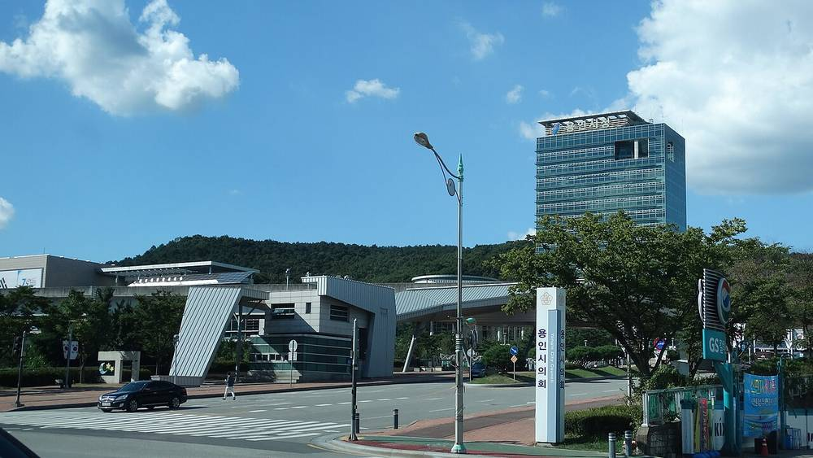
정부 '주민참여 우수사례' 한림해상풍력, 주민 몫 REC 수익에서 주민 회사채 이자 먼저 뗐다…로펌 3곳 "법 위반" 자문 의견
주민법인 3곳이 산 회사채 300억 원의 연 7% 이자를 가중치 0.3 추가 REC 수익에서 충당, 남은 돈만 '이익공유'로 지급…에너지공단 "절차 진행 중", 기후부 "문제 확인되면 개선", 사업자 "주민과 약정, 당국과 협의 중"
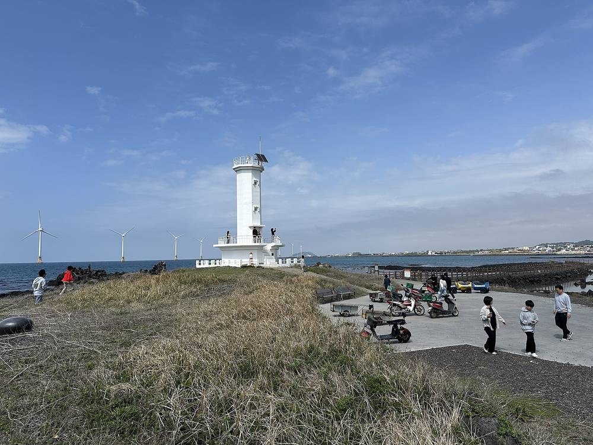
프랑스 랑드 생폴레닥스, 옛 폐기물 적치장에 4.57MWc 시민 태양광…주민 투자 조직 CIER40 따로 꾸려
코뮌·에네르코프 누벨아키텐 등이 사업 회사에 참여하고 대출·공공 자본·시민 참여를 섞어 400만 유로 넘게 투자…랑드도는 태양광 1,413MW로 프랑스 도 가운데 1위지만 에너지 소비 감축은 4.2%에 그쳐

독일 치메츠하우젠 풍력 14기, 투자사는 '30년 최대 2,300만 유로' 계산서…시장은 반대, 가구당 전기 할인은 연 45유로
가동 첫 15년은 영업세 거의 없고 토지 임대료는 사유지 주인 몫…법정 분담금 연 약 28만2,000유로는 마을이 내는 군 분담금 240만 유로의 10분의 1 남짓
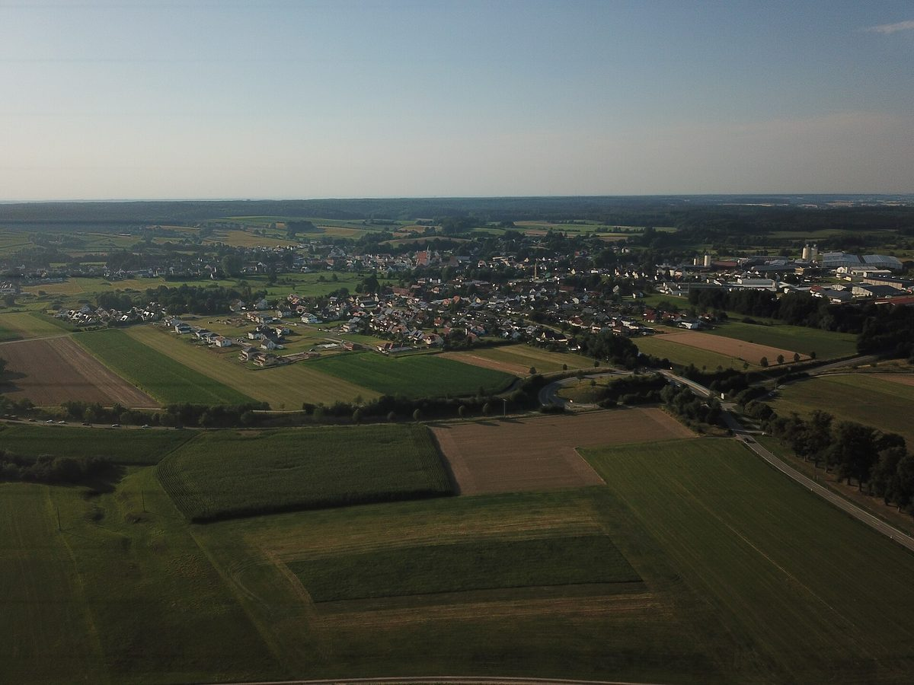
프랑스 낭트 경기장 주차장에 태양광 그늘막 6기…지자체 회사 3기·시민 출자회사 3기 나눠 짓는다
라 보주아르 주차장 패널 4,500㎡·연 1.1GWh 추정, 지름 2km 원 안 기업에 고정 요금 판매 추진…시민 주주 150명, 7개 시·읍 공영주차장 9곳으로 넓힌다
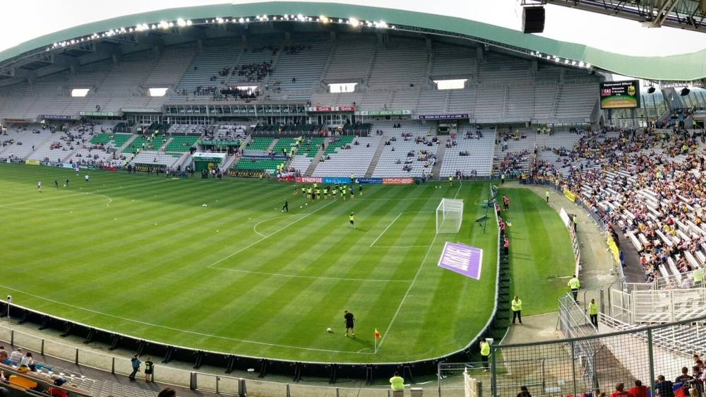
아르헨티나 부에노스아이레스주, 전기협동조합이 조합원 쓸 재생에너지 직접 생산하는 '법 15.665' 시행…주립은행 장기 저리 융자 길 열어
시 배전 영업권 가진 협동조합·혼합경제회사에 '공동체 자가발전자' 지위…생산 전기는 배전 공공서비스로 보고 여러 조합 공동 발전 허용, 남는 전기 팔려면 주식회사 형태 필요
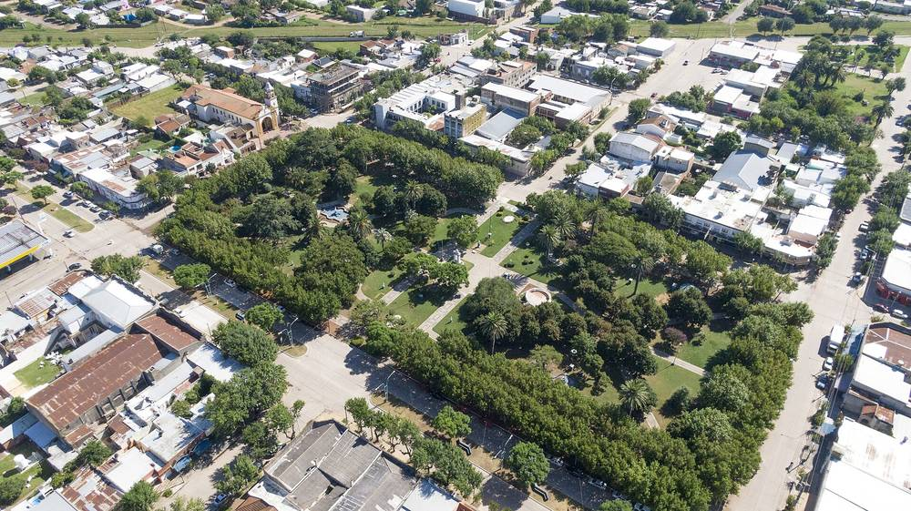
신한자산운용, 주민수익공유 펀드·에너지 인프라 성장 펀드 합계 약 5,000억 원 결성…주민 펀드 첫 투자처로 대규모 해상풍력 주민참여 사업 확보
발전단지 인근 주민·주민조합에 지분·채권 투자 자금을 대고 발전수익 일부를 배당·이자로 돌려주는 구조…주민 펀드 단독 금액, 첫 투자 사업 이름, 주민 금리·배당 조건은 발표에 없어
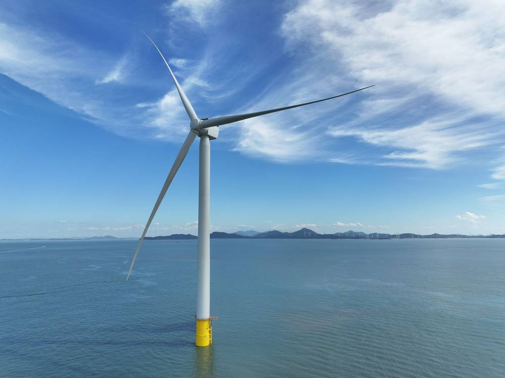
프랑스 협동조합 은행 라네프·전력협동조합 에네르쿠프, 재생에너지 예금통장 내놔…10유로부터, 이자 최대 100% 에너지 빈곤 단체에 기부
예금은 라네프 전체 대출 재원으로 들어가 지역에 뿌리내린 시민 운영 사업을 우선 지원…라네프 2025년 재생에너지 72개 사업에 3,900만 유로 대출
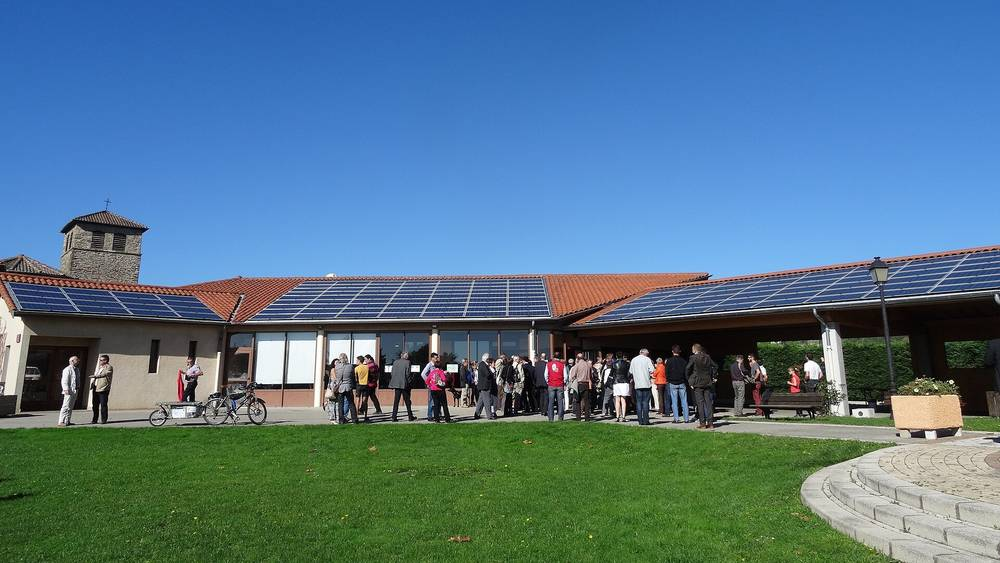
베를린 공영 지역난방 회사 BEW, 유럽투자은행서 5억 유로 대출 한도…"2030년 석탄 끝내고 하수 열 대형 히트펌프로"
첫 2억5,000만 유로 서명·최장 25년…KfW 대출 10억 유로에 이어 2030년까지 약 35억 유로 투자, 상수도공사 하수 열·청소공사 소각장 증기 활용

네덜란드 위트레흐트주, 공공 열 회사 'Uwarmte' 설립 추진…1,930만 유로 출자 요청, 10년간 약 1만5,000가구 연결
주 20%·배전사 자회사 40%·국영 열투자사 40% 공동 지배 구조…12월 16일 주의회 표결 앞둬, 주민 열 공동체와 "경쟁 아닌 분담" 약속

미국 켄터키 렉싱턴, 폐매립장 태양광에 '공동체 이익 협약'…저소득 가구 에너지비 지원·직업훈련 자금 의무화
시의회, 헤일리 파이크 매립장 개발사와 10월 22일 협약 승인…사업 관련 면허세 보고하게 해 수입 추적, 시는 "미국 최대 매립장 태양광" 주장

미국 미시간, 11월 3일 전력회사 정치자금 금지 주민투표…시민 56만 명 서명으로 올린 제안 2호
전력·가스 회사 PAC의 후보 직접 기부와 임원·이사·가족 기부까지 막는 안…찬성 측은 비싼 요금·잦은 정전이 전력회사 입김 탓, 반대 측은 표현의 자유 침해·영향력이 전국 거액 기부자로 옮겨갈 뿐

미국 앤아버 시영 전력 투표 앞두고 자금 격차…주민단체 누적 현금 약 6만 달러, DTE 지원 반대 단체는 누적 지출 170만 달러 넘어
7월 21일~10월 18일 보고 기간 찬성 단체 주민 소액 기부로 2만7,000달러 넘게 모아…반대 단체는 같은 기간 현금 4만 달러에 DTE 현물 7만9,000달러 넘게 받고 투자자 소유 전력회사 단체도 가세, 투표는 11월 3일
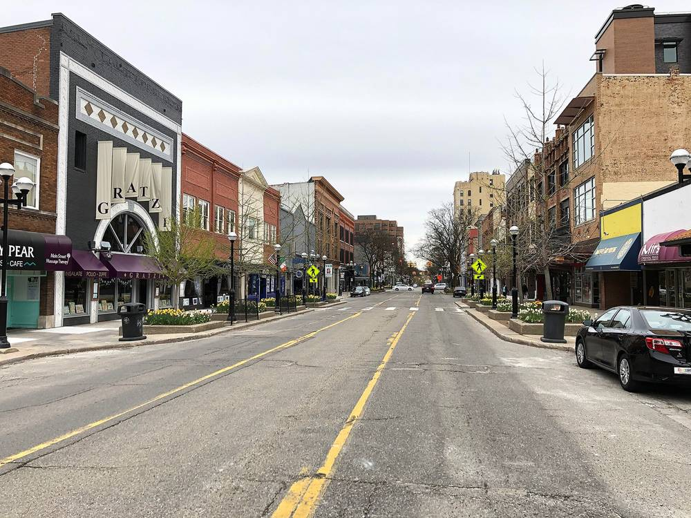
루마니아 탄광지대 고르지·돌지 군, 에너지공동체에 EU 기금 98% 무상 지원 공모…시민·아파트 주민회도 직접 신청
고르지 4,157만6,941유로·돌지 352만9,411유로 배정, 신청은 2027년 3월 31일까지…그린피스 루마니아, 40가구 아파트 한 동이면 자부담 8,000유로 예시 들며 11월 주민 워크숍

발전 5사 통합 특별법 국회 심사 본격화…한전 자회사냐 정부 직접 출자냐
최기상안은 한전 100% 자회사 한국발전, 다른 의원안은 정부 전액·51% 이상 출자…정부는 2027년 10월 출범 목표
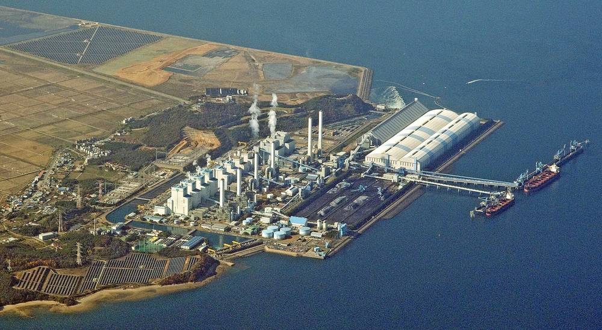
金融
江原道の境界地域4郡「軍の遊休地・日差し・水でエネルギー連帯を」…営農型太陽光の郡民ファンド、発電収益を基本所得に
鉄原・華川・楊口・麟蹄の政策フォーラム…「鉄原の農地の6割は外部所有、発電収益が外へ流出」、鉄原の太陽光と華川の揚水発電を結ぶ「境界地域エネルギー協力圏」構想
南オーストラリアの集合住宅住民にも「共同太陽光・蓄電池」…連邦・州政府が1,780万豪ドル支援、設置費の半額補助と残りは無利子融資
「StrataCharge」事業、1物件あたり補助金・融資それぞれ最大4万7,500豪ドル…所有者も賃借人も電気料金を節約、南オーストラリアでは12人に1人が区分所有建物に居住
海外の化石燃料に37兆ウォン融資の韓国、国際気候資金は7兆7,600億ウォン…緑色連合「拠出実績は世界最下位圏」
2018～2022年の化石燃料金融は気候資金の4.8倍…損失と損害基金は30.7%、緑の気候基金は23.3%のみ拠出
蔚山375MW浮体式洋上風力「イーストブルーパワー」、東西発電・オーシャンウィンズ・錦陽グリーンパワーが技術・金融協力を点検
12日に技術交流会・経営陣懇談会…ポルトガル・フランスの運営経験を共有、国内企業の参加や保守人材の育成も議論
済州のイ・チャンフム初代気候経済副知事「風と日差しの利益を道民の所得に」…住民参加型事業を道民ファンドへ拡大
2035年炭素中立目標、約2GWの楸子洋上風力を最優先…新規発電事業に住民が債券・ファンドで投資、共有化基金は脆弱層・共同体の財源に
蔚山の750MW浮体式洋上風力「文武バラム」の親会社、25日に清算可否の株主総会…資金確保がカギ
スウェーデンのヘキシコン、取締役会は存続を提案も「運転資金調達に重大な不確実性」と明記…監査人は意見を表明せず
独バイエルン州イーゼンの市民風力協同組合、組合員470人・出資金80万ユーロ…「着工は数年後、今は準備段階」
「市民エネルギー・イーゼンタール」が経験共有イベント…住民所有の風車7基を運営するフクスタールの元村長「お金が村に残る」
「水原ひだまり発電」の青写真…公営駐車場13カ所5MWから20MW・328億ウォン、公共の配当は気候対応基金に
水原市・水原都市公社・エネルギー協同組合が参加、市民ファンドで利益分配…16日に市議会で設立説明会
カナダ・カルガリーの電気・ガス小売会社、利益の100％を地域の性的少数者団体へ…「料金が共同体の基金に」
社会的企業Q-TILITIES、代表は無給で5年以内に10万ドル以上の還元目標
ドイツの組合員4万2,000人のエネルギー協同組合プロコンに通信会社も出資…1,266口・6万3,300ユーロ、「配当も再出資」
アミバ運営のSTROTH Telecomが組合員に…「持分数に関係なく1人1票の民主的な仕組みにひかれた」
江原道が108億ウォンを現物出資した大関嶺風力団地、年間純利益3億ウォンにとどまる…道議会の監査で「経済性と住民被害を改めて検証せよ」
江原開発公社が運営する団地の予想売上は21億ウォン…維持補修費や人件費が上がれば収益はさらに減る恐れ、騒音・低周波・シャドーフリッカーなど社会的費用も指摘
雪国・長岡で市民65人が「市民共同発電所」…出資金で屋根や農地の上に太陽光、収益は出資者へ
2023年設立の一般社団法人「ながおか自然エネルギー」、学校への出前授業や小水力体験も…「年間日射量は関東の約8割」
スコットランドの送電会社による500万ポンドの「ネットゼロ基金」、住民主導の26事業の支援を完了…「1ポンドで社会的価値2.85ポンド」
SPエナジー・ネットワークスの基金、中部・南部のコミュニティ建物の断熱・低炭素暖房・環境配慮型交通を支援…ワークショップ32回に450人超、22団体に専門助言、CO2を2万5,000トン以上削減
公共が先導する済州・羅州のエネルギー転換…風力共有化基金・羅州型太陽光年金で利益を分け合うも電力網の飽和が課題
済州エネルギー公社が風力59.53MWを運営・翰林洋上風力では住民1,009人が1人年351万ウォン…羅州では許可を得ても建てられない太陽光約2,700カ所
スコットランドのSSENトランスミッション、送電設備近くの住民に162万ポンドの地域基金の設計について意見を求める
レアーグ・ロガート住民対象のアンケートは11月16日〜12月14日、説明会3回…「サウス・ロッホ・シン地域基金」は2027年開始予定
英ナショナル・グリッド、ブライス変電所の増設地域に最大106万ポンドのコミュニティー基金…使い道は住民の意見を聞いて決める
データセンターとバーウィック・バンク洋上風力をつなぐ変電所の第1・2段階に53万ポンドずつ、12月6日まで4週間の意見募集…基金は来年夏に始動
龍仁市政研究院「半導体のRE100需要を市民の所得に」…市民投資・住民参加・公共資産太陽光を盛り込んだ利益共有モデルを提案
イシューリポート「YRI Insight 119号」…発電収益の共有、施工・保守への住民参加、政策金融と市民投資の連携、隣接市郡との広域協力など5つの方策
韓国の信用協同組合「信協」、市民太陽光から洋上風力・「日差し所得村」まで再エネ金融を拡大…村の発電施設資金を最大85％融資
安山市民太陽光発電協同組合の発電所60カ所建設を支えた経験を生かし、高敞洋上風力に1,000億ウォンの連携融資、エネルギー公団の利子補給で村の負担軽減
豪研究者「再エネの地域便益は一時的な支援でなく長く残る遺産に」…地域基金は2030年に2億1,300万豪ドルの見通し
シドニー工科大学の分析「地元雇用の効果はまだはっきりしない」…先住民への持ち分・収益5％共有の入札枠、地元研修、営農型太陽光の計画上の位置づけを提案
佐賀市、市が52％出資する地域新電力を設立…清掃工場の電気を公共施設113カ所へ直接販売
資本金5,000万円のうち市が2,600万円・民間6社が400万円ずつ…年約1万6,000MWhを販売、市外に流れていた電気料金を地域に残す
イタリアのエネルギー協同組合ènostra、2029年までに自前の発電を3倍・組合員2万8,000人目標…新規発電投資450万ユーロは組合員の出資で
10月末の組合員向けウェビナーで2026~2029年戦略計画を発表…顧客への供給電力は約60GWh→100GWh、出所を追跡できる電力の比率は20%→40%、「社会的企業」への転換も検討
フランス・アルザスの「三国国境」住民4人、市民エネルギーの会EC3Fを結成…1株108ユーロの出資で屋根置き太陽光の共同所有めざす
2022年のサン＝ルイ広域連合の説明会で出会い2023年末に独立、市民協同組合「エネルジー・パルタジェ・アン・アルザス」の地域グループとして活動…月1回集まり太陽光を載せる屋根を探し、集団自家消費事業を準備
ポーランド・オドラヌフなど3自治体のエネルギークラスター、公的資金3,000万ズウォティで住民の太陽光627カ所…住民負担は設置費の10%
2027年6月までに蓄電設備も併設、市長「クラスター全体では1,500カ所近く」…3自治体は住民に再エネ設備を見せる「エネルギーアカデミー」も計画
米国11月3日の地域エネルギー住民投票、最初の集計…キトサップの公営電力・ツーソンの民間電力会社の営業権は反対優勢、ユージーンの大企業負担クリーンエネルギー基金は賛成が先行
キトサップ「提案1号」は反対約60.5%、民間電力会社240万ドル対賛成側約9,000ドル…ツーソン「提案421」は初期開票で反対53.3%、TEPの430万ドルの運動が劣勢に、ユージーン「メジャー20-388」は賛成約58%で発議側が勝利宣言、アナーバーの市営電力案は非公式集計で反対51.83%となり否決
韓国の祖国革新党、超広域特区法案を党論として発議…再生可能エネルギー事業では総事業費の4%以上を住民に投資機会として優先提供
住民・労働者が参加する相生協議会、送配電の共同接続設備への国の支援を盛り込み、週52時間制の例外や持株会社規制の緩和は除外…規制特例には5年の有効期間、発議段階
ニュージーランド・アシュバートン地区議会、上がる電気料金で太陽光を検討…年40万ドル節約に500万ドル超の先行投資で議員の意見割れる
年間電気代は約177万ドル、来週からの長期計画予算審議で部署ごとの太陽光案を検討…「その金は道路に回すべきか」対「建物の屋根に少しずつ」
イタリア・ポンペイアーナ市、学校・市役所・公営駐車場の太陽光と再生可能エネルギー共同体（CER）を一括した民間投資入札…工事費65万7,099ユーロ、21年契約
コンセッション全体の推定価値141万1,638ユーロ、市が事業者に毎年2万9,585ユーロを支払う仕組み…応札は11月27日締め切り・30日開札、提案者の優先権はEU判決を受けて廃止
龍仁市政研究院「再生エネルギーの恩恵は市民に」…市民投資・住民の雇用・公共資産の太陽光を盛り込んだ「龍仁型利益共有モデル」を提案
イシューレポート「YRI Insight 119号」…半導体産業団地の電力設備は約15GWの見通し、市民協同組合・ファンドによる投資、送電網の影響を受ける住民への優先出資権を検討、公営駐車場51カ所のうち17カ所で太陽光計画提出
政府の「住民参加優良事例」翰林洋上風力、住民分のREC収益から住民社債の利息を先に差し引く…法律事務所3社が「法違反」との諮問意見
住民法人3社が購入した社債300億ウォンの年7%の利息を、加重値0.3の追加REC収益で賄い、残りだけを「利益共有」として支給…エネルギー公団「手続き中」、気候部「問題が確認されれば改善」、事業者「住民と約定、当局と協議中」
フランス・ランド県サン＝ポール＝レ＝ダックス、旧廃棄物置き場に4.57MWcの市民太陽光…住民投資組織CIER40を別に設立
コミューンやエネルコープ・ヌーヴェル＝アキテーヌなどが事業会社に参加し、融資・公的資本・市民参加を組み合わせて400万ユーロ超を投資…ランド県は太陽光1,413MWでフランスの県で首位だが、エネルギー消費の削減は4.2%にとどまる
独ツィーメッツハウゼンの風車14基、投資会社は「30年で最大2,300万ユーロ」と試算…町長は反対、世帯あたりの電気割引は年45ユーロ
稼働後15年間は営業税がほぼなく、土地賃料は私有地の所有者へ…法定の自治体分担金年約28万2,000ユーロは町が納める郡分担金240万ユーロの10分の1余り
フランス・ナントの競技場駐車場にソーラーシェード6基…自治体の会社が3基、市民出資会社が3基を分担
ラ・ボージョワール駐車場のパネル4,500㎡・年1.1GWhと推計、直径2kmの円内の企業へ固定料金での販売を目指す…市民株主150人、7市町の公営駐車場9カ所に拡大へ
アルゼンチン・ブエノスアイレス州、電力協同組合が組合員向け再生可能エネルギーを自ら発電できる「法15.665」施行…州立銀行の長期低利融資に道
市から配電事業権を得た協同組合・混合経済会社に「共同体自家発電者」の地位…発電した電気は配電公共サービスとみなし複数組合の共同発電も容認、余剰電力の販売には株式会社形態が必要
新韓資産運用、住民収益共有ファンドとエネルギーインフラ成長ファンドを計約5,000億ウォンで結成…住民ファンドの初の投資先に大規模洋上風力の住民参加事業を確保
発電団地周辺の住民・住民組合に持分・債券投資資金を供給し、発電収益の一部を配当・利息で還元する仕組み…住民ファンド単独の金額、初の投資事業名、住民向け金利・配当条件は発表されず
フランスの協同組合銀行ラ・ネフと電力協同組合エネルコープ、再エネ預金口座を発売…10ユーロから、利息の最大100％をエネルギー貧困支援団体に寄付
預金はラ・ネフ全体の融資原資となり、地域に根ざし市民が運営する事業を優先支援…ラ・ネフは2025年に再エネ72事業へ3,900万ユーロを融資
ベルリンの公営地域暖房会社BEW、欧州投資銀行から5億ユーロの融資枠…「2030年に石炭をやめ、下水熱の大型ヒートポンプへ」
第1弾2億5,000万ユーロに署名・最長25年…KfWの融資10億ユーロに続き2030年までに約35億ユーロを投資、上下水道公社の下水熱・清掃公社の焼却施設の蒸気を活用
オランダ・ユトレヒト州、公共熱供給会社「Uwarmte」設立へ…1,930万ユーロの出資を要請、10年で約1万5,000戸を接続
州20%・配電会社子会社40%・国営熱投資会社40%の共同支配構造…12月16日の州議会採決を前に、住民の熱コミュニティと「競争ではなく分担」を約束
米ケンタッキー州レキシントン、閉鎖埋立地の太陽光に「コミュニティ利益協定」…低所得世帯のエネルギー費支援・職業訓練資金を義務化
市議会、ヘイリー・パイク埋立地の開発事業者との協定を10月22日に承認…事業関連の職業ライセンス税を報告させ収入を追跡、市は「米国最大の埋立地太陽光」と主張
米ミシガン州、11月3日に電力会社の政治献金を禁じる住民投票…市民56万人の署名で実現した提案2
電力・ガス会社のPACによる候補者への直接献金、役員・取締役・家族の献金まで禁止する案…賛成側は高い料金と頻繁な停電は電力会社の影響力のせい、反対側は表現の自由の侵害、影響力が全国の大口献金者に移るだけと主張
米アナーバー、市営電力の住民投票を前に資金格差…住民団体の累計現金は約6万ドル、DTEが支える反対団体は累計支出170万ドル超
7月21日～10月18日の報告期間に賛成団体は住民の少額寄付で2万7,000ドル超を集める…反対団体は同期間に現金4万ドルとDTEの現物7万9,000ドル超を受け、投資家所有電力会社の団体も参加、投票は11月3日
ルーマニアの炭鉱地帯ゴルジュ・ドルジュ両県、エネルギー共同体にEU基金98％を無償支援する公募…市民やマンション住民組合も直接申請可能に
ゴルジュに4,157万6,941ユーロ、ドルジュに352万9,411ユーロを配分、申請は2027年3月31日まで…グリーンピース・ルーマニア、40世帯のマンション1棟なら自己負担8,000ユーロとの例を示し11月に住民向けワークショップ
金融
江原道边境四郡：以军队闲置用地、阳光和水资源结成“能源联盟”…提议设立农光互补郡民基金、发电收益转为基本收入
铁原、华川、杨口、麟蹄政策论坛…“铁原60%农地归外地人所有，发电收益外流”，提出连接铁原光伏与华川抽水蓄能的“边境地区能源合作圈”
南澳公寓居民也能用上“共享光伏和电池”…联邦与州政府拨款1,780万澳元，补贴一半安装费、其余提供无息贷款
“StrataCharge”计划每处物业补贴与贷款各最高4万7,500澳元…业主和租户都能节省电费，南澳每12人中就有1人住在分层产权建筑
韩国向海外化石燃料提供37万亿韩元融资，国际气候资金仅7.76万亿韩元…绿色联合：“缴款记录全球垫底”
2018至2022年化石燃料融资是气候资金的4.8倍…损失与损害基金只缴30.7%，绿色气候基金只缴23.3%
蔚山375兆瓦浮式海上风电“东蓝电力”项目：东西发电、Ocean Winds、锦阳绿色电力检视技术与融资合作
12日举行技术交流会和高管座谈会…分享葡萄牙、法国运营经验，并讨论国内企业参与和运维人才培养
济州首任气候经济副知事李昌钦：“让风和阳光的收益成为道民收入”…把居民参与型项目扩大为道民基金
以2035年碳中和为目标，优先推进约2吉瓦楸子海上风电…新发电项目由居民以债券、基金投资，共享基金用于弱势群体和社区
德国巴伐利亚伊森市民风电合作社：成员470人、出资80万欧元…"开工还要几年，现在是准备阶段"
"伊森塔尔市民能源"举办经验分享会…运营7台居民所有风机的富克斯塔尔前镇长："钱留在村里"
“水原阳光发电”蓝图出炉…从13处公营停车场5MW起步，规模20MW、328亿韩元，公共分红纳入气候应对基金
水原市、水原城市公社与能源合作社参与，以市民基金分享收益…16日在市议会举行创立说明会
德国拥有4.2万名社员的能源合作社Prokon迎来电信企业入股…1,266股、6.33万欧元，“分红也继续入股”
Amiva运营商STROTH Telecom成为社员…“看重不论股数多少一人一票的民主结构”
江原道以108亿韩元实物出资的大关岭风电场年净利润仅3亿韩元…道议会监察："重新审视经济性和居民受害"
江原开发公社运营的风电场预计年销售额21亿韩元…维修费和人工成本上涨可能进一步压缩利润，噪音、低频、阴影闪烁等社会成本也被提及
日本雪国长冈65名市民建“市民共同发电所”…以出资在屋顶和农田上方装太阳能，收益回馈出资者
2023年成立的一般社团法人“长冈自然能源”，还到学校上课、开展小水电体验…“年日照量约为关东的80%”
苏格兰输电公司500万英镑"净零基金"完成资助26个社区主导项目…"每投入1英镑产生2.85英镑社会价值"
SP能源网络基金支持中部和南部社区建筑保温、低碳供暖和绿色交通…32场研讨会450余人参加，22个团体获专业咨询，减排二氧化碳逾2.5万吨
公共部门引领的济州、罗州能源转型：以风电共有化基金和罗州型阳光年金分享收益，但电网饱和成难题
济州能源公社运营风电59.53MW，翰林海上风电1,009名居民人均年获351万韩元；罗州获许可却无法开工的光伏约2,700处
苏格兰SSEN输电公司就162万英镑地方基金设计征求输电设施附近居民意见
面向莱格、罗加特居民的问卷11月16日至12月14日开放，另有3场说明会…“南欣湖地方基金”预计2027年启动
英国国家电网为布莱斯变电站扩建地区设立最高106万英镑社区基金，用途听取居民意见后决定
连接数据中心和伯威克滩海上风电的变电站一、二期各分配53万英镑，征求意见4周至12月6日，基金明年夏季启动
龙仁市政研究院：“把半导体RE100需求转化为市民收入”…提出包含市民投资、居民参与和公共资产光伏的利益共享模式
专题报告《YRI Insight 第119期》…提出发电收益共享、居民参与施工与运维、政策性金融与市民投资联动、与邻近市郡广域合作等5项方案
韩国信用合作社“信协”将可再生能源金融从市民光伏扩展至海上风电和“阳光收入村”…村级发电设施资金最高可贷85%
凭借支持安山市民阳光发电合作社建成60座电站的经验，参与高敞海上风电1,000亿韩元联合贷款，能源公团贴息减轻村庄利息负担
澳大利亚研究人员："可再生能源的地方收益应是持久遗产而非一时甜头"…社区基金2030年预计达2亿1,300万澳元
悉尼科技大学分析称"本地就业效果尚不明显"…建议原住民股权与收益5%共享招标、本地培训，并在规划中承认农光互补
日本佐贺市成立市政府出资52%的地方电力公司…将清扫工厂电力直接售给113处公共设施
注册资本5,000万日元中市政府出资2,600万日元、6家民企各400万日元…年售电约1万6,000兆瓦时，把流向市外的电费留在本地
意大利能源合作社ènostra提出到2029年自有发电量增至3倍、社员达2万8,000人目标…450万欧元新增发电投资由社员出资筹集
10月底在面向社员的网络研讨会上发布2026~2029年战略计划…向客户供电由约60GWh增至100GWh，可追溯来源电力占比由20%升至40%，并研究转型为"社会企业"
法国阿尔萨斯"三国边境"4名居民组建市民能源团体EC3F…以每股108欧元入股共同拥有屋顶光伏
2022年在圣路易城市共同体说明会上相识、2023年底独立，作为市民合作社"阿尔萨斯共享能源"的地方小组活动…每月聚会一次寻找可装光伏的屋顶，筹备集体自用项目
波兰奥多拉努夫等3个地方政府组建能源集群，以3,000万兹罗提公共资金为居民安装627处光伏…居民只需承担10%安装费
2027年6月前同步安装储能设备，市长称"整个集群将近1,500处"…三地还计划设立向居民展示可再生能源设施的"能源学院"
美国11月3日地方能源公投首轮计票…基察普公营电力、图森民营电力公司特许经营权反对票领先，尤金由大企业负担的清洁能源基金赞成票领先
基察普"1号提案"反对约60.5%，民营电力公司240万美元对支持方约9,000美元…图森"421号提案"初步计票反对53.3%，TEP的430万美元宣传落后；尤金"20-388号提案"赞成约58%，发起方宣布胜利；安娜堡市营电力提案在非官方计票中以反对51.83%被否决
韩国祖国革新党以党论提出超广域特区法案…可再生能源项目须优先向居民提供总投资4%以上的投资机会
设立居民和劳动者参与的共生协议会，国家支持输配电共同接入设施，删除每周52小时工作制例外和控股公司规制放宽…规制特例设5年有效期，仍处提案阶段
新西兰阿什伯顿区议会因电费上涨研究光伏…年省40万元需先投入逾500万元，议员意见分歧
年电费约177万元，下周起的长期规划预算审议将讨论各部门光伏方案…"这笔钱是否该用在道路上"对"在建筑屋顶上一点点装"
意大利蓬佩亚纳镇将学校、镇政府和公共停车场光伏与可再生能源社区（CER）打包进行社会资本招标…工程投资65.7099万欧元，合同21年
特许经营总估值141.1638万欧元，镇政府每年向运营商支付2.9585万欧元…11月27日截止投标、30日开标，依欧盟法院判决取消发起人优先权
龙仁市政研究院："可再生能源的好处应归市民"…提出包含市民投资、居民就业、公共资产光伏的"龙仁型收益共享模式"
议题报告《YRI Insight》第119期…预计半导体产业园区电力设施约15GW，提出市民合作社和基金投资、研究向受输电网影响居民提供优先出资权，51处公营停车场中17处已提交光伏计划
政府"居民参与优秀案例"翰林海上风电从居民应得REC收益中先扣居民所购公司债利息…三家律师事务所咨询意见认为"违法"
三家居民法人认购的300亿韩元公司债年息7%由加权0.3的追加REC收益支付，余额才以"收益共享"名义发放…能源公团称"程序进行中"，气候部称"发现问题将改进"，企业称"与居民有约定，正与主管部门协商"
法国朗德省圣保罗-莱达克斯在旧废弃物堆放场建成4.57MWc市民光伏电站…另设居民投资组织CIER40
市镇与新阿基坦Enercoop等参与项目公司，结合贷款、公共资本和市民参与投资逾400万欧元…朗德省光伏装机1,413MW居法国各省之首，但能源消费仅减少4.2%
德国齐梅茨豪森14台风机，投资方算出‘30年最多2,300万欧元’…镇长反对，每户电费优惠一年仅45欧元
投运后头15年几乎没有营业税，土地租金归私人地主…法定地方分成每年约28万2,000欧元，仅相当于该镇缴纳的县分摊款240万欧元的十分之一多
法国南特球场停车场建6座光伏遮阳棚…地方政府公司与市民出资公司各建3座
博茹瓦尔停车场光伏板4,500㎡、预计年发电1.1GWh，计划以固定价格卖给直径2公里圆圈内的企业…市民股东150人，将扩大到7个市镇的9处公共停车场
阿根廷布宜诺斯艾利斯省"第15.665号法"生效，电力合作社可为社员自行生产可再生能源…省立银行将提供长期低息贷款
持有市级配电特许经营权的合作社和混合所有制公司获得"社区自发电者"地位…所发电力视为配电公共服务，允许多家合作社联合发电，出售余电须采用股份公司形式
新韩资产运用设立居民收益共享基金与能源基础设施成长基金，合计约5,000亿韩元…居民基金首个投资对象锁定大型海上风电居民参与项目
向发电园区周边居民和居民组合提供股权、债券投资资金，并以分红、利息形式返还部分发电收益…居民基金单独规模、首个投资项目名称及居民利率和分红条件均未公布
法国合作银行La Nef与电力合作社Enercoop推出可再生能源储蓄账户…10欧元起存，利息最多可100%捐给能源贫困救助组织
存款纳入La Nef整体贷款资金，优先支持扎根地方、由市民运营的项目…La Nef 2025年向72个可再生能源项目贷款3,900万欧元
柏林公营区域供热公司BEW获欧洲投资银行5亿欧元贷款额度，"2030年告别煤炭，改用污水热大型热泵"
首批2.5亿欧元已签署、期限最长25年；继KfW 10亿欧元贷款之后，2030年前投资约35亿欧元，利用供水公司污水热和清洁公司焚烧厂蒸汽
荷兰乌得勒支省推动成立公共供热公司“Uwarmte”…申请出资1,930万欧元，10年内连接约1万5,000户
省20%、配电公司子公司40%、国有热力投资公司40%共同治理…12月16日省议会表决在即，承诺与居民热力社区“分工而非竞争”
美国肯塔基州列克星敦为填埋场光伏项目签订"社区利益协议"…强制资助低收入家庭能源开支和职业培训
市议会10月22日批准与黑利派克填埋场开发商的协议…要求申报项目相关职业执照税以追踪收入，市方称其为"全美最大填埋场光伏"
美国密歇根州11月3日就禁止电力公司政治献金举行公投…56万市民联署推上票选的第2号提案
禁止电力和燃气公司的政治行动委员会直接向候选人捐款，连高管、董事及其家属的捐款也一并禁止…支持方称电价高、停电频繁都源于电力公司的影响力，反对方称侵犯言论自由、只会把影响力转给全国大金主
美国安娜堡市营电力公投前资金差距悬殊…居民团体累计现金约6万美元，DTE支持的反对团体累计支出逾170万美元
7月21日至10月18日申报期内，支持方团体靠居民小额捐款筹得逾2.7万美元…反对方同期获现金4万美元及DTE逾7.9万美元实物捐助，投资者所有电力公司的行业协会也加入，投票定于11月3日
罗马尼亚煤矿区戈尔日、多尔日两县推出能源社区专项招募，欧盟基金无偿补助98%…市民和公寓业主协会也可直接申请
戈尔日获配4,157万6,941欧元、多尔日获配352万9,411欧元，申请截至2027年3月31日…绿色和平罗马尼亚举例称40户公寓楼自付约8,000欧元，11月将为居民办研讨会
韩国五大发电公司合并特别法进入国会审议，韩电子公司还是政府直接出资成焦点
Choi Ki-sang议员案为韩电100%子公司韩国发电，其他议员案主张政府全额或51%以上出资，政府目标2027年10月成立
Finance
Four Gangwon border counties urged to form an 'energy alliance' of idle military land, sun and water, with a citizens' agrivoltaics fund paying a basic income
Cheorwon-Hwacheon-Yanggu-Inje policy forum: '60% of Cheorwon farmland is owned by outsiders, so power profits leak out'; proposal for a border-region energy zone linking Cheorwon solar and Hwacheon pumped storage
South Australian apartment residents to get shared solar and batteries: A$17.8 million federal-state package covers half the cost with grants, the rest with zero-interest loans
Under the StrataCharge program, grants and loans are each capped at A$47,500 per property; owner-occupiers and tenants both save on bills, and one in 12 South Australians lives in strata
Korea lent 37 trillion won to overseas fossil fuels but gave 7.76 trillion won in climate finance, Green Korea says
Fossil fuel finance was 4.8 times climate finance in 2018-2022; only 30.7% of loss-and-damage pledge and 23.3% of Green Climate Fund pledge paid
Partners review technology and financing for Ulsan's 375 MW 'East Blue Power' floating offshore wind project
Korea East-West Power, Ocean Winds and Keumyang Green Power met on the 12th, sharing experience from Portugal and France and discussing local supply chains and O&M training
Jeju's first climate-economy vice governor: 'Turn wind and sun into residents' income' with a province-wide citizens' fund
Aiming for carbon neutrality by 2035 with the ~2 GW Chuja offshore wind farm as top priority; residents to invest via bonds and funds, shared fund to support vulnerable households and communities
Parent of Ulsan's 750 MW floating offshore wind project Munmu Baram to vote on liquidation on the 25th; funding is key
Sweden's Hexicon board proposes continuing but cites 'material uncertainty' over working capital; auditor declines to give an opinion
Bavarian village wind cooperative in Isen reaches 470 members and €800,000: 'Construction is years away; we are preparing'
Bürgerenergie Isental hosts experience evening; former Fuchstal mayor, whose community runs seven citizen-owned turbines, says 'the money stays in the village'
Suwon Haetbit Power takes shape: 5MW on 13 public car parks first, 20MW and 32.8 billion won in total, with public dividends going to a climate fund
City, Suwon Urban Corporation and energy co-ops join; citizens share profits through a fund — founding briefing at city council on Nov. 16
Calgary power and gas retailer gives 100% of profits to local LGBTQ+ groups: 'bills become a community fund'
Social enterprise Q-TILITIES: founder takes no salary and aims to give back at least $100,000 within five years
Telecom firm joins German energy co-op Prokon, which has 42,000 members, with 1,266 shares worth €63,300
STROTH Telecom, the company behind Amiva, says the one-member-one-vote model won it over and will reinvest dividends
Daegwallyeong Wind Farm, Backed by 10.8 Billion Won of Gangwon Province Assets, Earns Only 300 Million Won a Year; Provincial Councillors Call for Review of Economics and Harm to Residents
The farm run by Gangwon Development Corporation expects 2.1 billion won in annual revenue; rising maintenance and labour costs could cut profit further, and noise, low-frequency sound and shadow flicker were raised as social costs
In snowy Nagaoka, 65 citizens build 'citizen co-owned power plants' with solar on roofs and farmland, returning revenue to investors
The Nagaoka Natural Energy association, founded in 2023, also runs school classes and micro-hydro demos; annual sunshine is about 80% of the Kanto region's
Scottish Grid Operator's £5 Million Net Zero Fund Completes Support for 26 Community-Led Projects, Returning £2.85 in Social Value per £1
SP Energy Networks fund backed insulation, low-carbon heating and greener transport for community buildings in central and southern Scotland; 450+ people joined 32 workshops, 22 groups got expert advice, over 25,000 tonnes of CO2 saved
Public-Led Energy Transitions in Jeju and Naju Share Gains Through a Wind Commons Fund and a 'Sunlight Pension,' but Grid Saturation Looms
Jeju Energy Corporation runs 59.53MW of wind; 1,009 residents earn about ₩3.51 million a year each from Hallim offshore wind; in Naju, some 2,700 licensed solar projects cannot be built
Scotland's SSEN Transmission Asks Residents Near Its Power Lines to Help Design a 1.62 Million Pound Local Fund
Survey for Lairg and Rogart residents runs from November 16 to December 14 with three sessions; the South Loch Shin Local Fund is due to open in 2027
National Grid Offers Up to 1.06 Million Pounds in Community Funding Around Blyth Substation Expansion, With Residents Asked How It Should Be Spent
530,000 pounds for each phase of a substation project connecting a data centre campus and the Berwick Bank offshore wind farm; four-week consultation runs to 6 December, with the fund due to launch next summer
Yongin Research Institute Proposes Turning Chipmakers' RE100 Demand Into Citizen Income Through a Profit-Sharing Model
Issue report YRI Insight No. 119 sets out five measures, including shared generation revenue, resident jobs in construction and maintenance, linking policy finance with citizen investment, and cooperation with neighbouring cities and counties
Korea's Shinhyup Credit Unions Widen Renewable Finance From Citizen Solar to Offshore Wind and 'Sunlight Income Villages', Lending Up to 85% of Village Plant Costs
Building on its support for the 60 plants of the Ansan citizens' solar cooperative, Shinhyup joins a 100 billion won syndicated loan for Gochang offshore wind, while an energy agency interest subsidy eases village borrowing costs
Australian Researchers Say Renewables Must Leave Regions "a Lasting Legacy, Not a Sugar Hit"; Community Benefit Funds Forecast to Reach A$213 Million by 2030
University of Technology Sydney analysis finds local jobs impact not yet clear; proposes First Nations equity and 5% revenue-sharing tenders, local training and planning recognition for agrivoltaics
Japan's Saga City Sets Up Local Power Company With 52% Municipal Stake to Sell Waste-Plant Electricity Directly to 113 Public Facilities
Of ¥50 million in capital, the city put in ¥26 million and six private firms ¥4 million each; about 16,000 MWh a year to be sold, keeping power bills that used to leave the city in the local economy
Italian energy cooperative ènostra aims to triple its own generation and reach 28,000 members by 2029, with €4.5 million of new generation funded by members
2026-2029 strategic plan presented to members in a late-October webinar: energy supplied to customers to rise from about 60GWh to 100GWh, traceable-source share from 20% to 40%, conversion to a 'social enterprise' under study
Four residents of Alsace's 'Three Borders' area form citizen energy group EC3F, seeking shared ownership of rooftop solar through 108-euro shares
They met at a 2022 Saint-Louis agglomeration public meeting and went independent at the end of 2023 as a local group of the citizen cooperative Énergies partagées en Alsace; they meet monthly to find roofs for solar and are preparing collective self-consumption projects
Energy cluster of three Polish municipalities led by Odolanów installs 627 residential solar systems with 30 million zloty in public funds, residents pay 10% of costs
Energy storage to be added by June 2027 and the mayor says the cluster as a whole will have nearly 1,500 systems; the three municipalities also plan an "Energy Academy" to show residents how renewable installations work
First counts in US local energy ballots on November 3 — Kitsap public power and Tucson utility franchise trail, while Eugene's corporate-funded Clean Energy Fund leads
About 60.5% oppose Kitsap's Prop 1 after a private utility spent $2.4 million against supporters' roughly $9,000; Tucson's Prop 421 trails 53.3% against in early results despite TEP's $4.3 million campaign; Eugene's Measure 20-388 at about 58% yes as backers declare victory; Ann Arbor public power proposal fails with 51.83% against in unofficial results
Rebuilding Korea Party tables super-regional special zone bill as party policy, giving residents first right to invest at least 4% of total costs in renewable energy projects
Bill sets up co-prosperity councils with residents and workers and state support for shared grid connection facilities, while dropping the 52-hour workweek exemption and holding-company deregulation; regulatory exemptions would expire after five years, and the bill has only just been introduced
New Zealand's Ashburton council weighs solar as power bills rise, split over $5m-plus upfront cost to save $400,000 a year
Council spends about $1.77m a year on electricity; department solar proposals go to long-term plan budget talks next week — "spend it on roads?" versus "bite-size" rooftop panels
Italy's Pompeiana bundles solar on its school, town hall and public car parks with a renewable energy community in one private-finance tender, with works of €657,099 and a 21-year contract
Concession valued at €1,411,638 overall, with the town paying the operator €29,585 a year; bids close on 27 November and open on the 30th, and the promoter's pre-emption right is dropped after an EU court ruling
Yongin Research Institute says renewable energy benefits should go to citizens, proposes a "Yongin-style profit-sharing model" with citizen investment, local jobs and solar on public assets
Issue report YRI Insight No. 119 projects about 15GW of power facilities for the chip industrial complexes and proposes citizen cooperative and fund investment, considers priority investment rights for residents affected by transmission lines, and notes solar plans submitted for 17 of 51 public car parks
Hallim offshore wind farm, a government 'model of resident participation', paid residents' bond interest out of their extra REC revenue; three law firms advised it breaches the law
The 7% annual interest on 30 billion won of bonds bought by three village corporations came out of revenue from the 0.3 REC bonus, with only the remainder paid as 'profit sharing'; energy agency says 'procedures under way', ministry says it will fix problems if confirmed, developer says it acted on an agreement with residents and is consulting authorities
Saint-Paul-lès-Dax in France's Landes builds 4.57MWc citizen solar plant on former waste storage site, with separate resident investment body CIER40
The commune, Enercoop Nouvelle-Aquitaine and others joined the project company, mixing loans, public capital and citizen participation in an investment of over 4 million euros; Landes leads French departments with 1,413MW of solar but has cut energy consumption by only 4.2%
Investor pitches 'up to 23 million euros over 30 years' for 14 wind turbines in Germany's Ziemetshausen; the mayor is opposed and the household power discount comes to 45 euros a year
Almost no trade tax in the first 15 years of operation and land rent going to private landowners; the statutory municipal levy of about 282,000 euros a year is just over a tenth of the 2.4 million euros the town pays in district levy
Six solar canopies rise over a stadium car park in Nantes, France, split between a council energy company and a citizen-funded company
4,500 m² of panels at La Beaujoire expected to produce 1.1 GWh a year, to be sold at fixed prices to businesses within a circle 2 km in diameter; 150 citizen shareholders, with the programme set to cover nine public car parks in seven municipalities
Argentina's Buenos Aires province brings 'Law 15.665' into force, letting electricity cooperatives generate renewable power for their members, with long-term low-rate loans from the provincial bank
Cooperatives and mixed-economy companies holding municipal distribution concessions get 'community self-generator' status; their power counts as part of the public distribution service and joint generation is allowed, but selling surplus requires a public limited company
Shinhan Asset Management closes resident profit-sharing and energy infrastructure funds totaling about 500 billion won, securing a large offshore wind resident-participation project as the residents' fund's first investment
The fund supplies money for equity and bond stakes to residents and resident associations near large power complexes and returns part of the power revenue as dividends or interest; the residents' fund's own size, the name of its first project and residents' rate and dividend terms were not announced
French cooperative bank La Nef and power cooperative Enercoop launch renewable energy savings account from 10 euros, with up to 100% of interest donatable to an energy poverty charity
Deposits feed La Nef's overall lending, which prioritises locally rooted, citizen-run projects; La Nef lent 39 million euros to 72 renewable energy projects in 2025
Berlin's publicly owned district heating company BEW secures €500 million EIB loan facility to "end coal by 2030 and switch to large wastewater heat pumps"
First €250 million tranche signed with terms of up to 25 years; after €1 billion in KfW loans, about €3.5 billion to be invested by 2030, using wastewater heat from the water utility and steam from the city cleaning company's incinerator
Dutch province of Utrecht moves to set up public heat company Uwarmte, seeks EUR 19.3 million to connect about 15,000 homes over 10 years
Shares split 20% province, 40% grid operator subsidiary and 40% state heat investor so no party decides alone; provincial council votes on 16 December, and local heat communities are promised cooperation, not competition
Lexington, Kentucky, attaches a community benefits agreement to landfill solar, requiring funds for low-income energy help and job training
Council approved the deal with the Haley Pike landfill developer on October 22; the company must report project-related occupational license fees so revenue can be tracked, and the city calls it the largest landfill-to-solar project in the U.S.
Michigan votes November 3 on banning utility political money, with Proposal 2 put on the ballot by 560,000 signatures
Measure would bar utility-funded PACs from giving directly to candidates and stop utility executives, board members and their families from donating; supporters blame high bills and frequent outages on utility clout, opponents call it an attack on free speech that would only shift influence to wealthy national donors
Funding gap ahead of Ann Arbor public power vote: residents' group has raised about $60,000 in cash, DTE-backed opposition has spent more than $1.7 million
Supporters raised over $27,000 mostly in small resident donations in the 21 July to 18 October reporting period; opponents took in $40,000 cash plus over $79,000 in-kind from DTE in the same period, joined by the investor-owned utilities' trade group; the vote is on 3 November
Romania's coal counties Gorj and Dolj open energy community call with 98% EU grant funding, letting citizens and apartment owners' associations apply directly
Gorj allocated €41,576,941 and Dolj €3,529,411, applications open until 31 March 2027; Greenpeace Romania cites a 40-household block paying €8,000 of its own money as an example and plans resident workshops in November
Korea's bill to merge five power generators enters parliamentary review as KEPCO subsidiary vs direct state ownership is debated
Rep. Choi Ki-sang's bill makes Korea Power a wholly owned KEPCO subsidiary while rival bills call for full or 51%-plus state funding; government targets an October 2027 launch